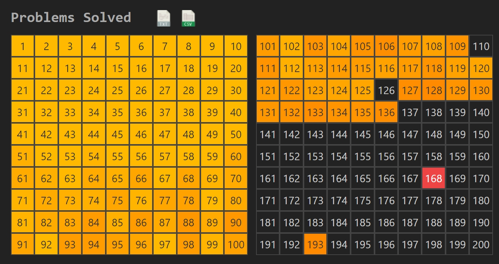

Brief Introduce to Project Euler
Project Euler is a project aimed at promoting the intersection of mathematics and computer science throughsolving computational programming problems. It is named after the Swiss mathematician Euler (Leonhard Euler).
Project Euler provides a series of challenging mathematical and computer science problems covering a wide range of topics, from simple number theory problems to complex combinatorial challenges. Participants are encouraged to use their programming and problem-solving skills to devise efficient solutions to these problems.
The project is popular among programmers, mathematicians, and enthusiasts as a wayto improve their skills and deepen their understanding of both mathematics and computer science concepts.
"Project Euler exists to encourage, challenge, and develop the skills and enjoyment of anyone with an interest in the fascinating world of mathematics."
My Progress of Project Euler

Since I was admitted to the School of Software, University of Science and Technology of China, I set the object to find a job in algorithm. To reach that goal, I learn and solve algorithm problems via leetcode and project euler.
I use c++ and java to solve complicated problems and python to easy ones, through which I practice my proficiency in c++ and Java. I am now familiar with coding with objective method to solve regular and hard algorithm problems.
Problem Type 1: Primes
Wiki page about prime: prime number
Prime problems are intresting because of its following features:
Countability: There are infinitely many prime numbers.
Distribution: Prime numbers become less frequent as numbers get larger, but they still occur with surprising regularity.
Role in Mathematics: Prime numbers play a fundamental role in number theory and cryptography. They are the building blocks of all integers.
Density: Despite becoming less frequent as numbers get larger, prime numbers are distributed in such a way that there is no apparent pattern or formula for generating them directly.
We can use basic prime function returning a boolean to test primes. Since the time complexity of this function is not large, it can be used frequently.
- // Judging a prime
- private static boolean prime(int n) {
- if (n <= 1) return false;
- for (int i = 2; i <= Math.sqrt(n); i++)
- if (n % i == 0) return false;
- return true;
- }
However, we may encounter situations where we need to find many prime numbers and search, or at the same time to find Composite numbers. We can use sieve to do that.
- // Seiving primes
- private static boolean[] primes_composites(int size) {
- boolean[] prime = new boolean[size];
- Arrays.fill(prime, true);
- for (int i = 2; i < size; i++) {
- if (!prime[i]) continue;
- for (int j = i + i; j < size; j += i) prime[j] = false;
- }
- return prime;
- }
Other operations differs every problem, but understanding properties of primes is important.
Related problems and solutions:
- import java.util.Arrays;
- public class p134 {
- private static int test_size = 1000000;
- private static boolean prime(int n) {
- if (n <= 1) return false;
- for (int i = 2; i <= Math.sqrt(n); i++)
- if (n % i == 0) return false;
- return true;
- }
- private static int add_prime(int p) {
- int ret = 1;
- while (p > 0) {
- ret *= 10;
- p /= 10;
- }
- return ret;
- }
- public static void main(String[] args) {
- long sum = 0;
- for (int p1 = 5; p1 <= test_size; p1++)
- if (prime(p1)) {
- int p2 = p1 + 1;
- while (!prime(p2)) p2++;
- // run all p1 and p2
- int add = add_prime(p1);
- long s = add + p1;
- while (s % p2 != 0) s += add;
- sum += s;
- }
- System.out.println(sum);
- }
- }
solution: ( this solution requires some complex pre-calculations, you can read some problems before this to understand " 2 * n * p " )
- public class p123 {
- private static long remainder(int p, int n) {
- if (n % 2 == 0) return 2;
- else return (long) 2 * n * p;
- }
- private static boolean prime(int n) {
- if (n < 2) return false;
- for (int i = 2; i <= Math.sqrt(n); i++)
- if (n % i == 0) return false;
- return true;
- }
- public static void main(String[] args) {
- int n = 1;
- int p = 2;
- while (true) {
- if (prime(p)) {
- long r = remainder(p, n);
- if (r > 10000000000l){
- System.out.println(p + ", " + n);
- break;
- }
- n++;
- }
- p++;
- }
- }
- }
Other related problems:
- Pandigital Prime Sets, diifficult rating: 45%
- Primes with Runs, diifficult rating: 45%
(this problems related to backtracking)
Problem Type 2: Squares
Squares are not hard to understand like primes, even easier. But when it comes to large range of them, we need some technic.
Obviously, we can use following properties to judge square consicuently in O(1):
if n is a square, it can be written as 1 + 3 + 5 + ... + m.
One solution for Fibonacci Golden Nuggets goes like this. It requires some complex pre-calculations. Fibonacci Golden Nuggets, diifficult rating: 50%
- import java.math.BigInteger;
- public class p137_unsolved {
- private static void run() {
- BigInteger odd_sum = BigInteger.ONE;
- BigInteger odd = new BigInteger("3");
- BigInteger five = new BigInteger("5");
- BigInteger two = new BigInteger("2");
- int cnt = 0;
- for (BigInteger a = new BigInteger("1"); ; a = a.add(BigInteger.ONE)) {
- BigInteger p = a.multiply(a).multiply(five).add(a.multiply(two)).add(BigInteger.ONE);
- while (p.compareTo(odd_sum) > 0) {
- odd_sum = odd_sum.add(odd);
- odd = odd.add(two);
- }
- if (p.equals(odd_sum)) {
- System.out.println(a);
- cnt++;
- if (cnt >= 15) break;
- }
- }
- }
- public static void main(String[] args) {
- run();
- }
- }
Other related problems:
Problem Type 3: Backtracking
Backtracking is a typical method to solve complicated problems, especially when it comes to multiple loops.
Because the essence of backtracking is to exhaustively exhaust all possibilities, and then select the answer we want. If we want to make the backtracking method more efficient, we can add some pruning operations, but it cannot change the exhaustive nature of the backtracking method.
There are some basic frames for backtracking to follow, like solution for Red, Green, and Blue Tiles, diifficult rating: 35% below.
- import java.math.BigInteger;
- import java.util.ArrayList;
- import java.util.List;
- import java.util.Objects;
- public class p117 {
- private static int test_size = 50;
- private static int sum = 0;
- private static List<List<Integer>> tile_list;
- private static void track_back(List<Integer> tiles, int start_idx) {
- if (sum > test_size) return;
- tile_list.add(new ArrayList<>(tiles));
- for (int tile = start_idx; tile <= 4; tile++) {
- tiles.add(tile);
- sum += tile;
- track_back(tiles, tile);
- tiles.remove(tiles.size() - 1);
- sum -= tile;
- }
- }
- public static void main(String[] args) {
- BigInteger ans = new BigInteger("0");
- BigInteger[] fac = new BigInteger[test_size + 1];
- fac[0] = new BigInteger("1");
- for (int i = 1; i <= test_size; i++) fac[i] = fac[i - 1].multiply(new BigInteger(Integer.toString(i)));
- tile_list = new ArrayList<>();
- track_back(new ArrayList<>(), 2);
- for (List<Integer> list : tile_list) {
- int gray = test_size;
- for (int tile : list) gray -= tile;
- BigInteger way = fac[gray + list.size()].divide(fac[gray]);
- int repeat = 1;
- int i = 1;
- while (i < list.size()) {
- if (Objects.equals(list.get(i), list.get(i - 1))) repeat++;
- else {
- way = way.divide(fac[repeat]);
- repeat = 1;
- }
- i++;
- }
- way = way.divide(fac[repeat]);
- ans = ans.add(way);
- }
- System.out.println(ans);
- }
- }
When need break from deep, We can use object-oriented features and exception catching mechanisms. Like Java code here, it breaks the back tracking from deep inside.
- public class test {
- private static void back_tracking_(){
- // ... basic back tracking frame here.
- }
- private static void back_tracking(){
- try {
- back_tracking_();
- } catch (ArithmeticException error) {
- System.out.println("got ans");
- error.printStackTrace();
- }
- }
- public static void main(String[] args) {
- back_tracking();
- }
- }
Related problems and solutions:
-
Non-bouncy Numbers, diifficult rating: 30%
- import java.util.Arrays;
- public class p113 {
- public static long inc_cnt = 0;
- public static long dec_cnt = 0;
- public static int up_bound_length = 101;
- public static int print_cnt = 0;
- public static void inc_track_back(StringBuilder n, int start_digit) {
- if (n.length() > 0 && n.length() >= up_bound_length) return;
- if (n.length() > 0 && n.charAt(0) != '0') inc_cnt++;
- for (int i = start_digit; i <= 9; i++) {
- n.append(i);
- inc_track_back(n, i);
- n.deleteCharAt(n.length() - 1);
- }
- }
- public static void dec_track_back(StringBuilder n, int start_digit) {
- if (n.length() > 0 && n.length() >= up_bound_length) return;
- if (n.length() > 0 && n.charAt(0) != '0' && n.charAt(0) != n.charAt(n.length() - 1)) dec_cnt++;
- for (int i = start_digit; i >= 0; i--) {
- n.append(i);
- dec_track_back(n, i);
- n.deleteCharAt(n.length() - 1);
- }
- }
- public static void track_back(String[] args) {
- inc_track_back(new StringBuilder(), 0);
- dec_track_back(new StringBuilder(), 9);
- System.out.println(inc_cnt + dec_cnt);
- }
- public static void main(String[] args) {
- long[][] inc = new long[101][10];
- // inc[i][j] indicates how many ascending numbers starting with j and having length i
- for (long[] ints : inc) Arrays.fill(ints, 0);
- for (int j = 0; j <= 9; j++) inc[1][j] = 1;
- for (int i = 2; i <= 100; i++)
- for (int j = 9; j >= 0; j--) // The loop here is a simplification after writing the suffix and array
- if (j == 9) inc[i][j] = inc[i - 1][j];
- else inc[i][j] = inc[i][j + 1] + inc[i - 1][j];
- long[][] dec = new long[101][10];
- for (long[] ints : dec) Arrays.fill(ints, 0);
- for (int j = 0; j <= 9; j++) dec[1][j] = 1;
- for (int i = 2; i <= 100; i++)
- for (int j = 0; j <= 9; j++)
- if (j == 0) dec[i][j] = dec[i - 1][j];
- else dec[i][j] = dec[i][j - 1] + dec[i - 1][j];
- long cnt = 0;
- for (int i = 1; i <= 100; i++)
- for (int j = 1; j <= 9; j++) {
- cnt += inc[i][j];
- cnt += dec[i][j];
- } // Output 13005 here, no problem, you need to subtract numbers that are both ascending and descending numbers
- for (int repeat_digit = 1; repeat_digit <= 9; repeat_digit++)
- for (int len = 1; len <= 100; len++)
- cnt -= 1;
- System.out.println(cnt);
- }
- }
-
Pandigital Prime Sets, diifficult rating: 45%
- import org.w3c.dom.ls.LSException;
- import java.util.*;
- public class p118 {
- private static List<StringBuilder> permuts;
- private static boolean prime(int n) {
- if (n <= 1) return false;
- for (int i = 2; i <= Math.sqrt(n); i++)
- if (n % i == 0) return false;
- return true;
- }
- private static void find_permutations(StringBuilder digits) {
- if (digits.length() >= 9) {
- permuts.add(new StringBuilder(digits));
- return;
- }
- for (int i = 1; i <= 9; i++) {
- if (digits.indexOf(Integer.toString(i)) < 0) {
- digits.append(i);
- find_permutations(digits);
- digits.deleteCharAt(digits.length() - 1);
- }
- }
- }
- private static Set<List<Integer>> prime_sets;
- private static void seperate_primes(String rest_digits, List<Integer> primes) {
- if (rest_digits.length() <= 0) {
- List<Integer> copy = new ArrayList<>(primes);
- Collections.sort(copy);
- prime_sets.add(copy);
- }
- for (int len = 1; len <= rest_digits.length(); len++) {
- int seperate_num = Integer.parseInt(rest_digits.substring(0, len));
- if (prime(seperate_num)) {
- primes.add(seperate_num);
- seperate_primes(rest_digits.substring(len), primes);
- primes.remove(primes.size() - 1);
- }
- }
- }
- public static void main(String[] args) {
- permuts = new ArrayList<>();
- find_permutations(new StringBuilder());
- prime_sets = new HashSet<>();
- for (StringBuilder per : permuts)
- seperate_primes(per.toString(), new ArrayList<>());
- System.out.println(prime_sets.size());
- }
- }
Other related problems:
Problem Type 4: dynamic programming
Dynamic programming is a method used in solving complex problems by breaking them down into simpler subproblems and solving each subproblem only once, storing the solutions to subproblems to avoid redundant calculations. Here are some key aspects of dynamic programming:
Optimal Substructure: Dynamic programming relies on the principle of optimal substructure, which means that the optimal solution to a problem can be constructed from the optimal solutions of its subproblems.
Overlapping Subproblems: Another crucial concept in dynamic programming is the observation that many subproblems are solved repeatedly in a recursive manner. By storing the solutions to these subproblems, dynamic programming avoids redundant computations and improves efficiency.
Memoization and Tabulation: There are two main approaches to implementing dynamic programming: memoization and tabulation. Memoization involves storing the results of already solved subproblems in memory to avoid recomputation. Tabulation involves solving subproblems in a bottom-up manner, starting from the smallest subproblems and gradually building up to the larger problem.
Complexity: The time complexity of a dynamic programming algorithm depends on the number of subproblems and the time it takes to solve each subproblem. In general, dynamic programming algorithms have polynomial time complexity, making them efficient for solving many real-world problems.
Project Euler is not a typical place for dynamic programming, however, there are still many problems can be solved by the theory of it.
Related problems and solutions:
-
Path Sum: Two Ways, diifficult rating: 20%
- import numpy as np
- file = '0081_matrix.txt'
- data = np.loadtxt(file, delimiter=',')
- minPathSum = [[0 for _ in range(80)] for _ in range(80)]
- minPathSum[0][0] = data[0][0]
- for j in range(1, 80):
- minPathSum[0][j] = minPathSum[0][j - 1] + data[0][j]
- minPathSum[j][0] = minPathSum[j - 1][0] + data[j][0]
- for i in range(1,80):
- for j in range(1,80):
- minPathSum[i][j]=min(minPathSum[i-1][j],minPathSum[i][j-1])+data[i][j]
- print(minPathSum[79][79])
-
Path Sum: Four Ways, diifficult rating: 25%
- import heapq
- import numpy as np
- class PriorityQueue:
- def __init__(self):
- self.elements = []
- def is_empty(self):
- return len(self.elements) == 0
- def put(self, item):
- heapq.heappush(self.elements, (item[2], item))
- def get(self):
- return heapq.heappop(self.elements)[1]
- Q = PriorityQueue()
- file = '0083_matrix.txt'
- data = np.loadtxt(file, delimiter=',')
- visited = [[0 for _ in range(80)] for _ in range(80)]
- Q.put((0, 0, data[0][0]))
- while not Q.is_empty():
- cell = Q.get()
- i, j, currentPathSum = cell[0], cell[1], cell[2]
- if visited[i][j] == 1: continue
- visited[i][j] = 1
- if i == j == 79:
- print(currentPathSum)
- exit()
- if i > 0 and visited[i - 1][j] == 0: Q.put((i - 1, j, currentPathSum + data[i - 1][j]))
- if j > 0 and visited[i][j - 1] == 0: Q.put((i, j - 1, currentPathSum + data[i][j - 1]))
- if i < 79 and visited[i + 1][j] == 0: Q.put((i + 1, j, currentPathSum + data[i + 1][j]))
- if j < 79 and visited[i][j + 1] == 0: Q.put((i, j + 1, currentPathSum + data[i][j + 1]))
Problem Type 5: Simulation
Project Euler is a place where all of life's problems related to mathematics and programming can arise and attract widespread attention.
In life, due to the powerful computing power of computers, many games and practical problems can be solved through simulation methods. We can design appropriate data structures to represent things in these problems and solve them simply with brute force algorithms.
Related problems and solutions:
-
Darts, diifficult rating: 45%
- def compute():
- points = [i * j for i in range(1, 21) for j in range(1, 4)] + [25, 50]
- doublePoints = [i * 2 for i in range(1, 21)] + [50]
- ways = [[[None] * len(points) for _ in range(101)] for _ in range(3)]
- def cal(throw, total, maxIndex):
- if ways[throw][total][maxIndex] is None:
- if throw == 0:
- result = 1 if total == 0 else 0
- else:
- result = 0
- if maxIndex > 0:
- result += cal(throw, total, maxIndex - 1)
- if points[maxIndex] <= total:
- result += cal(throw - 1, total - points[maxIndex], maxIndex)
- ways[throw][total][maxIndex] = result
- return ways[throw][total][maxIndex]
- checkout = 0
- for remainingPoints in range(1, 100):
- for throw in range(3):
- for p in doublePoints:
- if p <= remainingPoints:
- checkout += cal(throw, remainingPoints - p, len(points) - 1)
- return str(checkout)
- if __name__ == '__main__':
- print(compute())
-
Hexagonal Tile Differences, diifficult rating:
55%
- import java.util.ArrayList;
- import java.util.Collections;
- import java.util.List;
- class edge {
- List<Long> cells;
- int length;
- Long start;
- edge(Long start, int length) {
- this.length = length;
- this.start = start;
- cells = new ArrayList<>();
- for (int i = 0; i <= length; i++) cells.add(start + i);
- }
- public void set(int idx, Long item) {
- cells.set(idx, item);
- }
- public int size() {
- return cells.size();
- }
- }
- class hexa {
- edge[] edges;
- Long start;
- int length;
- hexa(Long start, int length) {
- this.length = length;
- this.start = start;
- edges = new edge[6];
- for (int i = 0; i < 6; i++)
- edges[i] = new edge(start + i * length, length);
- edges[5].set(edges[5].size() - 1, start);
- }
- }
- public class p128_2 {
- private static boolean prime(Long n) {
- if (n <= 1) return false;
- for (long i = 2L; i <= Math.sqrt(n); i++)
- if (n % i == 0) return false;
- return true;
- }
- public static List<Long> cal_tiles(hexa h1, hexa h2, hexa h3) {
- List<Long> tiles = new ArrayList<>();
- int length = h2.length;
- for (int i = 0; i < 6; i++) {
- // for every edge
- for (int j = 0; j <= length - 1; j++) {
- // for every number on the edge
- Long t = h2.edges[i].cells.get(j);
- List<Long> neighbors = new ArrayList<>();
- if (j == 0) {
- neighbors.add(h3.edges[i].cells.get(j));
- neighbors.add(h3.edges[i].cells.get(j + 1));
- neighbors.add(h2.edges[i].cells.get(j + 1));
- neighbors.add(h1.edges[i].cells.get(j));
- neighbors.add(h2.edges[(i + 5) % 6].cells.get(length - 1));
- neighbors.add(h3.edges[(i + 5) % 6].cells.get(length));
- } else {
- neighbors.add(h3.edges[i].cells.get(j));
- neighbors.add(h3.edges[i].cells.get(j + 1));
- neighbors.add(h2.edges[i].cells.get(j + 1));
- neighbors.add(h1.edges[i].cells.get(j));
- neighbors.add(h1.edges[i].cells.get(j - 1));
- neighbors.add(h2.edges[i].cells.get(j - 1));
- }
- int cnt = 0;
- for (Long n : neighbors)
- if (prime(Math.abs(t - n))) cnt++;
- if (cnt >= 3) tiles.add(t);
- }
- }
- return tiles;
- }
- public static void main(String[] args) {
- long start = 2L;
- int length = 1;
- hexa h1 = new hexa(start, length);
- start += length * 6;
- length++;
- hexa h2 = new hexa(start, length);
- List<Long> all_tiles = new ArrayList<>();
- all_tiles.add(1l);
- all_tiles.add(2l);
- while (true) {
- start += length * 6;
- length++;
- hexa h3 = new hexa(start, length);
- List<Long> tiles = cal_tiles(h1, h2, h3);
- all_tiles.addAll(tiles);
- h1 = h2;
- h2 = h3;
- if (h3.length % 5001 == 0)
- System.out.println("when the hexa.length is " + h3.length + ", get " + all_tiles.size() + " tiles");
- if (all_tiles.size() >= 2014) break;
- }
- Collections.sort(all_tiles);
- System.out.print("all_tiles.size(): ");
- System.out.println(all_tiles.size());
- System.out.println(all_tiles.get(1999));
- }
- }
Other related problems:
postscript
I have always loved mathematics and computers. I took the initiative to have fun in the Euler Project. I also hope that my work can be recognized by everyone. It would be better if I could promote the development of the Euler Project.